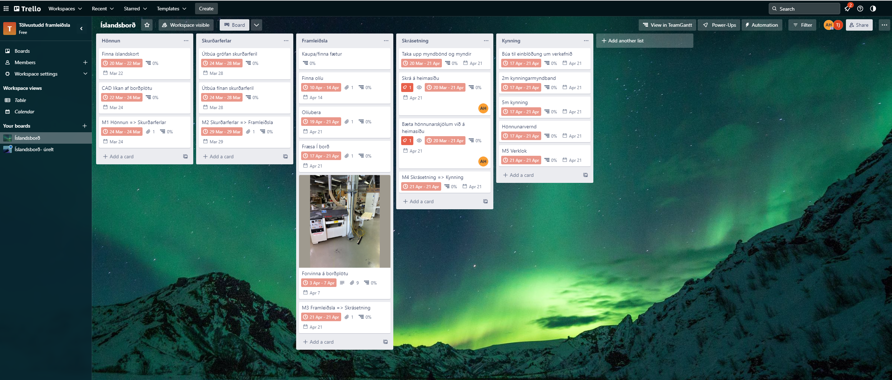
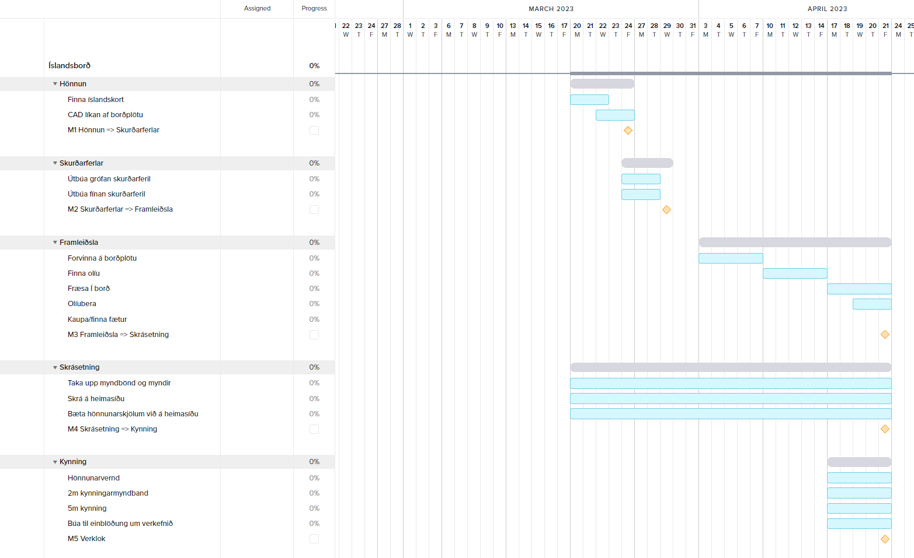

CNC cutting topographic map of iceland on to a tabletop
I´m sorry but this one is in Icelandic
Þetta er verkefni sem ég vann með Birki Erni Erlendssyni, Kristófer Leví Sigtryggssyni og Þorbirni Braga Jónssyni og er lokaverkefni í áfanganum Tölvustudd framleiðsla, VÉL608G.
Verkefnið sem við höfðum í huga var að taka þykka krossviðarplötu og umbreyta í borðplötu fyrir kaffiborð. Þá var planið að fræsa út Ísland í þrívídd þannig að hæðarlínur sæjust á landinu svipað og borðið sem hefur alltaf verið í Ráðhúsinu nema bara minna.
Farið var inná Terrain2STL til að ná í STL-skrá af Íslandi. Sjá Birkir´s website. Í framhaldi af því var skráin af Íslandi opnuð í Fusion 360 þar sem möskvinn (e.mesh) var gerður fínni til að auðvelda alla vinnu með skránna. Sjá Þorbjörn´s website. Þegar búið var að gera möskvann fínni var stl-skráin af Íslandi flutt yfir í Solidworks þar sem botninn á landinu var gerður sléttur svo hægt væri að vinna með það frekar. Þegar það var lokið var borðið aftur flutt yfir í Fusion 360 þar sem borðplatan var útbúin í kringum landið. Lesa má nánar um meðhöndlun á þrívíddarlíkani inná persónulegri heimasíðu Arons: Aron´s contribution. Líkan af borðplötunni má sjá á mynd hér fyrir neðan:

Fyrir þá sem hafa áhuga af því að nálgast Fusion 360 skránna af borðinu þá geta þeir nágast hana með því að smella á þennan link: Fusion 360 skrá af borðinu
Til að tryggja að framleiðslan tæki ekki óheyrulega langan tíma voru útbúnir tveir skurðferlar. Annarsvegar einn grófur sem að var ætlaður til að fræsa út Ísland gróflega. Síðan einn fínan til að hafa yfirborðsáferðina af landinu slétta. Grófi skurðferillinn var útbúinn með Pocket clearing aðferðinni. Notaður var 10 mm biti með þremur flautum í þá aðferð. Samkvæmt Fusion 360 átti sá skurðarferilll að taka 36 mínútur. Notast var við Scallop aðferðina við gerð fína skurðarferilsins. Í honum var 6 mm biti notaður með tveimur flautum. Sá skurðarferill átti að taka 1:27 klst. Notast var við spindle speed 12500 rpm og feed rate 4000 mm/min í báðum fræsingunum. Myndir hér fyrir neðan sýna grófa og fína skurðarferilinn í Fusion 360:

Lesa má nánar um gerð skurðarferla inná Aron´s contribution.
Þegar búið var að útbúa skurðarferlana var útbúinn kóði sem fræsirinn gat skilið með því að fara í Post Process fyrir hvorn skurðarferil fyrir sig. Þar þurfti að velja Shopbot PRSalpha fræsinn en sá sem við notuðum var af þeirri gerð. Til að fara í Post Process þurfti að hægri smella á skurðarferilinn. Þá birtist gluggi þar sem maður þurfti að velja fræsi undir Post. Að lokum þurfti að velja nafn og staðsetningu á kóðanum áður en kóðinn var útbúinn með því að smella á Post. Sjá mynd fyrir neðan:
Okkur áskornaðist 2 bútar af límtré sem voru tilvaldir í verkefnið. Þessir ákveðnu bútar voru ekki í fullkomnu standi og þurfti því að vinna þá til þess að gera þá að flottum tilvonandi borðplötum. Það vildi svo heppilega til að einn hópmeðlimur þekkti til kennara í húsasmíði við Tækniskólann að hægt var að fá aðgang að tækjum þar til þess að vinna bútana.
Bútarnir voru báðir settir í slípun þar sem þeir vou gerðir jafn þykkir og fullkomlega sléttir á öllum hliðum.


Til þess að báðir bútarnir yrðu nákvæmlega eins þá þurfti að saga þá í stærð. Því var notuð mjög fullkomin borðsög sem fór auðvelt með límtréið. Þar var digital mælir sem mældi upp á næsta millimetra lengdina á hverri hlið. Þar sem bútarnir eru talsvert þykkir þurfti að passa að blaðið myndi ekki brenna bútinn.

Kantarnir voru allir fræstir til þess að þeir væru rúnaðir en ekki beittir. Þetta var gert með borðfræsi þar sem köntunum var rennt meðfram venjulegum rúnunarbita. Auðvelt verkefni en hér þurfti að vanda til verka til þess að skemma ekki bútinn.

Til þess að fá sem best yfirborð á borðplöturnar þá þurfti að sanda en þar sem sögunin og fræsunin voru mjög vel gerðar var auðvelt verk að sanda aðeins með sandpappír númer 1.000 til þess að fá smá míkt á yfirborðið og til að tréolían myndi setjast betur.

Fyrir frekari lýsingu á forvinnunni er hægt að kíkja inná Þorbjörn´s website.
Fræsirinn sem notaður var við það að fræsa Ísland út í borðplötu var af gerðinni Shopbot. Byrjað var að fræsa út pocket clearing skurðarferilinn. Þegar hann var búinn að keyra í smá stund komust við að því að hann stefndi á það að fara út af landinu. Það var vegna ónákvæmni í mælingum. Því þurfti að mæla borðplötuna upp á nýtt og uppfæra módelið af borðplötunni í Fusion 360. Þar þurfti að endurstaðsetja Ísland á borðplötunni. Ákveðið var að halda stærðinni á Íslandi eins en í staðinn var hluti af sjónum skorinn af landinu. Nánar má lesa um þær lagfæringar inná Aron´s contribution. Þegar það var búið þufti að útbúa skurðarferla upp á nýtt. Þegar búið var að útbúa nýja skurðarferla var hægt að keyra hann í fræsinum.
Áður en hægt var að keyra skurðarferilinn á fræsinum þurfti að festa borðplötuna í fræsinum. Það var gert með skrúfum. Sjá mynd af festingu fyrir neðan:
Þegar búið var að festa plötuna þurfti að staðsetja upphafspunkt hnitakerfisins en hann var í neðra hægra horni plötunnar. X og Y ás fræsisins voru staðsett með auganu en til að staðsetja Z ás fræsisins var notast við sjálfvirka kvörðun í fræsinum þar sem álplata var lögð yfir borðplötuna og fræsirinn mældi fjarlægðina að henni. Byrjað var á pocket clearing skurðarferlinum en má sjá afrakstur þeirrar fræsingar á mynd hér fyrir neðan:
Pocket clearing skurðurinn tók rúmar 40 mínútur en ekki 36 mínútur eins og Fusion 360 gaf upp. Að loknum pocket clearing skurðinum var hægt að framkvæma fína skurðinn. Hann var útbúinn með Scallop skurðarferlinum. Myndbandsbrot af þeim skurði má sjá hér fyrir neðan:
Fíni skurðurinn heppnaðist einstaklega vel og náði hann að fanga mikil smáatriði í landinu þó svo að 6 mm flatur biti hefði verið notaður í hann. Útkomu skurðarins má sjá á mynd hér fyrir neðan:
Þegar búið var að fræsa landið út í viðarplötuna þurfti að verja hana og setja fætur undir. Fjallað verður um það í eftirvinnslu kaflanum hér á eftir.
Að lokinni fræsingu olíbáru Aron, Birkir og Kristófer með olíu sem Þorbjörn reddaði. Mynd af olíunni má sjá hér fyrir neðan:
 Einnig ákváðum við að sleppa því að nota epoxy og setja frekar plexi gler á plötuna. Aron og Kristófer
skáru út 480mmx360mm með 7.5mm fillet plexi gleri í laserskeranum. Framvæmdu þeir skurðinn í samræmi við verkefni 2:
Project 2. Sjá má hvernig platan kom út með plexi glerinu og olíuborin á mynd hér fyrir neðan.
Einnig ákváðum við að sleppa því að nota epoxy og setja frekar plexi gler á plötuna. Aron og Kristófer
skáru út 480mmx360mm með 7.5mm fillet plexi gleri í laserskeranum. Framvæmdu þeir skurðinn í samræmi við verkefni 2:
Project 2. Sjá má hvernig platan kom út með plexi glerinu og olíuborin á mynd hér fyrir neðan.

Hér má nágast fusion 360 skrá sem inniheldur teikningu af plexi glerinu sem hægt er að laser skera eftir: Plexi plata
Til að halda utan um verkefnið settum við í sameiningu upp kanban borð í Trello ásamt því að útbúa tímaáætlun með Team Gantt sem er viðbót við Trello
Með kanban borðinu var hægt að brjóta verkefnið niður í viðráðanlega verkþætti. Notast var við hefðbundna verkefnastjórnun með agile ívafi við verkefnið en brutum við það niður í 5 fasa en þeir voru hönnun, skurðarferlar, framleiðsla, skrásetning og kynning. Í hverjum og einum fasa voru mismunandi verkþættir sem þurfti að klára svo hægt væri að halda áfram með næsta fasa. Við notuðumst við þetta svo hægt væri að sjá verkefnið í heild sinni, hvað væri búið og hvað sé eftir. Mynd af kanban borðinu þar sem við héldum utan um verkefnið má sjá á mynd hér fyrir neðan.
Þar sem við vorum með fría útgáfu af Team Gantt gat bara einn unnið í því í einu þó að allir gætu unnið í Trello. Því skrifuðum við hjá okkur verkniðurröðun í töfluna hér fyrir neðan:
| Verþáttur | Hönnun | Skrurðarferlar | Framleiðsla | Skrásetning | Kynning |
|---|---|---|---|---|---|
| Finna íslandskort | BÖE | ||||
| CAD líkan af borði | ADB | ||||
| Forvinna á skurðarferlum | ÞBJ | ||||
| Grófur skurðarferill | ADB | ||||
| Fínn skurðarferill | ADB | ||||
| Finna fætur | ÞBJ | ||||
| Finna olíu | ÞBJ | ||||
| Olíubera | ADB,BÖE,KLS | ||||
| Fræsa í borð | ADB,BÖE,KLS,ÞBJ | ||||
| Forvinna á borðplötu | ÞBJ | ||||
| Taka upp myndbönd og myndir | ADB,BÖE,KLS,ÞBJ | ||||
| Skrá á heimasíðu | ADB,BÖE,KLS,ÞBJ | ||||
| Bæta hönnunarskjölum á heimasíðu | KLS | ||||
| Búa til einblöðung | ÞBJ | ||||
| Kynning | NA | ||||
| Kynningarmyndband | BÖE | ||||
| Hönnunarvernd | ADB |
Þar sem ADB er Aron Dagur Beck, BÖE er Birkir Örn Erlendsson, KLS er Kristófer Leví Sigtryggsson og ÞBJ er Þorbjörn Bragi Jónsson.
Til að tryggja að verkefnið næði að klárast fyrir skiladag þá ákváðum við hversu langan tíma það tæki að klára hvern og einn fasa og hvenær það ætti að framkvæmast. Eins og sjá má á myndinni hér fyrir neðan er búið að brjóta verkefnið niður í 5 spretti með undirliðum, allir þessir sprettir ættu því að klárast fyrir 21.apríl. Til að byrja með fann Birkir líkan af Íslandi eða Íslandskorti. Eftir það tóku Aron og Þorbjörn að sér að gera grófa og fína skurðferla í Fusion 360. Síðan reddaði Þorbjörn fínni borðplötu sem passaði nákvæmlega við það sem við vorum að leitast eftir og sá hann um allt utanáhald á henni áður en hún fór í fræsingu. Á meðan allir sprettirnir stóðu yfir skrifuðum við allir jafnt og þétt inn á síðuna það sem við vorum að gera.
Því næst mældum við okkur til móts við Hafliða um að fá að fræsa borðplötuna en það seinkaðist vegna uppsetningu á fræsinum tók lengri tíma en búist var við. En að lokinni uppsetningu var hægt að hefjast handa. En akkúrat þegar það var komið að okkar hóp þá hafði rafmagnið slegið út deginum áður og við þurftum við að fresta þessu aftur um einn dag því húsvörðurinn var ekki á svæðinu á sumardeginum fyrsta. En loks þegar við byrjuðum að fræsa þá skiptumst við á að taka vaktir að standa yfir fræsinum á meðan hann vann vinnuna.
Sjá má gantt rit sem sýnir tímaáætlun á verkefninu okkar hér fyrir neðan:
Til að allir hópmeðlimir gætu unnið saman að verkefninu notuðum við Visual Studio en þar var hægt að ná í viðbót þ.a. allir hópmeðlimir gætu unnið á sama tíma í sameiginlegu vefsíðunni. Þá viðbót má nálgast með þessum leiðbeiningum : Collaborate with Live Share. Síðan var notast við Live Server til að sjá breytingar á heimasíðu á meðan maður skrifaði. Lesa má nánar um uppsetningu á því inná Project 1 - Aron.
Borðið lítur hrikalega vel út og mun prýða sér vel í stofunni með heitum kaffibolla

Hér fyrir neðan má sjá myndband sem sýnir landið í smáatriðum.
Sjá má heimasíður hópmeðlima í töflunni fyrir neðan:
| Hópmeðlimur | Vefslóð |
|---|---|
| Aron Dagur Beck | Aron´s Personal Portfolio |
| Birkir Örn Erlendsson | Birkir´s Personal Portfolio |
| Kristófer Leví Sigtryggsson | Kristófer´s Personal Portfolio |
| Þorbjörn Bragi Jónsson | Þorbjörn´s Personal Portfolio |
Í pocket clearing skurðarferlinum var stepdown stillt sem 5 mm. Það olli óþarfa álagi á bitann sem notaður var til að fræsa skurðarferilinn út en það mátti heyra á fræsinum þegar verið var að fræsa út. Einnig þurfti fíni skurðarferillinn að taka of mikið efni þegar hann var að fara yfir landið sem olli því að oft varð smá efni eftir og skurðurinn óhreinn. Því myndudum við stilla á 3 mm stepdown í stað 5 mm ef við værum að gera verkefnið aftur.
Copyright (C) 2023 Aron Dagur Beck, Birkir Örn Erlendsson, Kristófer Leví Sigtryggsson, Þorbjörn Bragi Jónsson
Permission is hereby granted, free of charge, to any person obtaining a copy of this Product and associated documentation files , to deal in the Product files without restriction, including without limitation the rights to use, copy, modify, merge, publish, distribute, sublicense, and/or sell copies of the Software, and to permit persons to whom the Software is furnished to do so, subject to the following conditions: The above copyright notice and this permission notice shall be included in all copies or substantial portions of the Product.
THE PRODUCT IS PROVIDED “AS IS”, WITHOUT WARRANTY OF ANY KIND, EXPRESS OR IMPLIED, INCLUDING BUT NOT LIMITED TO THE WARRANTIES OF MERCHANTABILITY, FITNESS FOR A PARTICULAR PURPOSE AND NONINFRINGEMENT. IN NO EVENT SHALL THE AUTHORS OR COPYRIGHT HOLDERS BE LIABLE FOR ANY CLAIM, DAMAGES OR OTHER LIABILITY, WHETHER IN AN ACTION OF CONTRACT, TORT OR OTHERWISE, ARISING FROM, OUT OF OR IN CONNECTION WITH THE PRODUCT OR THE USE OR OTHER DEALINGS WITH THE PRODUCT.
CNC cutting topographic map of iceland on to a tabletop

My contribution to the final project
You can contact me by using email or by phone.